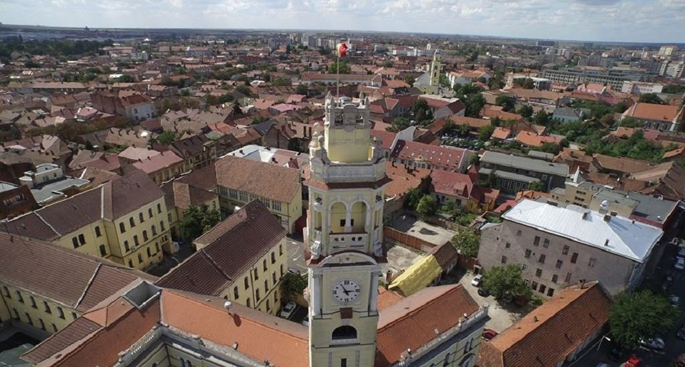

Turnul Primariei
Descriere
Turnul Primăriei reprezintă un obiectiv turistic care oferă posibilitatea de a cuprinde cu privirea întreg orașul.
Deși o urcare în turn reprezintă o provocare destul de mare, merită efortul deoarece de acolo, de sus, veți avea parte de o priveliște panoramică absolut superbă asupra orașului Oradea.
La etajul 1 se află și mecanismul orologiului denumit ”ceasul mamă”, care cântă la ore fixe ”Marșul lui Iancu”. Orologiul a supravieţuit celor două războaie mondiale, iar acoperişul şi zidul turnului au supravieţuit celor două incendii, primul în 1917, iar la doilea în 1944. Cadranul ceasului păstrează şi azi urme de gloanţe din timpul războiului din 1944.